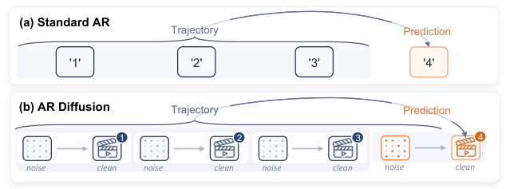

Paper Notes
Problem: A Chunk Is Not an Atomic Token

Bohan Wang et al. (2026). Original Figure 1, unchanged. CC BY 4.0 (https://creativecommons.org/licenses/by/4.0/). · Paper & Caption ↗
自回归视频按 chunk 顺序生成：当前 chunk 依赖过去的视频，内部又有多次 diffusion denoising。通常传给下一 chunk 的只有最后预测。作者把这两个时间轴区分开：外层是视频顺序，内层是同一 chunk 的去噪进度。本文的 trajectory 指第二个轴，不是相机或物体的运动轨迹。
图 1 上方的语言 token 一旦产生就是一个离散结果，下方的视频 chunk 却经历逐步细化。作者据此提出保留中间预测作为上下文。这是一种有实验支持的建模选择；链式分解本身并不能证明 endpoint 一定丢失了所有对未来有用的信息。
Paper Notes
What Is Stored and What Is Read
输入是 prompt、当前 noisy chunk 和历史 chunk 的预测。模型在每次去噪时给出 clean-signal estimate，历史轨迹由这些估计组成。当前步骤只选择每个历史 chunk 的一个轨迹节点参与 attention，而不是一次读取全部节点。输出仍是视频 latent，再经原 decoder 得到 RGB 视频。
选择随当前去噪进度变化。早期读相对粗的预测，后期读更精细的预测。每次 attention 的历史节点数受控，不意味着保存轨迹、维护缓存或切换条件没有成本；论文报告训练缓存维护约增加 6% 时间，推理吞吐也略低。
Paper Notes
Selection Rule and a Worked Example
令 σ 是当前 noise level，p=1−σ 表示去噪进度。用 nominal amplitude SNR=p/(1−p) 衡量信号占比，选择比当前进度领先 γ 倍 amplitude SNR 的历史位置，得到下式。γ=1 对齐同进度；γ 趋向无穷时，对 p>0 退化为 endpoint 条件。
教学算例：p=0.25、γ=2 时，Sγ(p)=0.4；p=0.75 时为 0.857。不是把所有步骤都换成最干净帧，而是让历史适度领先。实际只有有限采样节点，附录还加入网格正则，再取最邻近节点；固定采样网格上的索引可以预计算，但取出的历史内容随视频而变。
p = 1 − σ Sγ(p) = γp / [1 + (γ − 1)p], γ ≥ 1
Paper Notes
Two Training Stages and Gradient Boundaries
第一阶段使用真实视频做 flow matching，训练 20K steps。真实视频没有生成轨迹，算法先在随机 noise level 构造 zσ=(1−σ)x0+σε，再用模型预测速度，得到历史估计 zσ−σvθ。这个辅助预测在 no-grad 下执行，作为当前 velocity regression 的条件；监督目标仍来自真实 x0 与采样噪声 ε。
第二阶段从第一阶段初始化，在自己的 autoregressive rollout 上做 2K steps DMD。Wan2.1-14B 是冻结 real-score teacher，另训练 fake-score network。作者称其为 RL/self-rollout 阶段，但具体损失是 DMD，不是额外的 PPO 或人工奖励模型。
每次 rollout 只随机选择一个去噪步保留梯度，chunk 之间的 KV detach。因此未来误差并不沿完整历史回传、重新训练所有过去的写入。这一点对理解 memory 很重要：模型学会在这种历史条件下生成，并不等于做了任意长序列的可微记忆优化。
zσ = (1−σ)x0 + σε x̂0 = zσ − σvθ(zσ,σ,history) L_SL = E ||vθ(xt,t,history) − (ε−x0)||²
Paper Notes
Evidence: Quality, Cost, and Matched Controls
短视频设置为 832×480、16 FPS、81 帧，四步采样。VBench 用 946 prompts、16 个维度，Total=(4×Quality+Semantic)/5。TraF 得到 85.15，Self Forcing 84.31，Causal Forcing 84.04；但这些基线部分取自原论文，初始化也不同。不能仅凭主表把全部增益归因于 trajectory。
更直接的对照是在相同 SL checkpoint 上训练 endpoint-only 与 TraF：两次 run 的 Total 分别为 84.24/85.15 和 84.33/85.13。γ=1、2、3 的首轮结果为 84.82、85.15、85.13。把 endpoint 加高斯噪声的两个对照只有 83.87、83.95，说明任意扰动不能重现轨迹条件的收益。
30 秒评测使用 MovieGenBench 前 128 条 prompts、六个 5 秒片段，Total 是 Temporal、Frame、Text 三项的等权平均，与短视频 Total 定义不同。TraF 73.98 对比 Self Forcing 71.06，Quality Drift 1.38 对比 2.21；但 Text Alignment 66.08 低于 66.33。LongLive 的 drift 为 0.60，也比 TraF 低，所以不能声称所有方法中漂移最小。
推理报告 TraF 15 FPS、latency 0.78 秒，Self Forcing 17 FPS、0.69 秒，尚无精确匹配吞吐的比较。长期实验中 SF、CF 与 TraF 共用 attention sink 和 21 latent-frame 局部窗口；首个 chunk 常驻，不是无限保存全部历史。
Paper Notes
Scope and Connection to Recent Notes
轨迹条件与 eDMD 的 endpoint reference 不矛盾：TraF 讨论 generator 读取什么历史，eDMD 讨论 fake score 拟合什么分布。历史上下文使用中间估计，不要求 fake score 也去拟合所有中间状态的混合。两处都出现 trajectory，但属于不同接口。
本文主实验只覆盖一种 1.3B backbone、一个分辨率。附录十步对照还改用了 1.3B teacher，因此只能比较该设置内的 matched gain，不能直接与四步 14B teacher 的绝对分数比较。对我最有价值的结论是：历史表示的“成熟程度”可以是读取决策的一部分；是否需要显式语义，要另外验证。
Discussion
Reading Questions
Is the trajectory a motion path?
不是。它是同一视频 chunk 在不同 diffusion steps 上的 clean-signal estimates。
Does future loss train all past memory writes?
没有完整跨历史反传：论文使用单步梯度截断及跨 chunk KV detach。
Which experiment best isolates the idea?
相同 SL checkpoint 的 endpoint/trajectory 两轮对照，加上高斯扰动无法复现增益，比不同初始化的主表更有辨别力。
Is this free memory?
不是。每次只读一个节点减少 attention 成本，但轨迹缓存维护、吞吐与延迟仍有代价。
References
The reproduced figure retains its original content and license. Analysis is based on the cited paper version; repository availability is checked separately from paper results.
Verified on 2026-11-24. Paper results refer to the linked versions. Repository references were checked on this date.